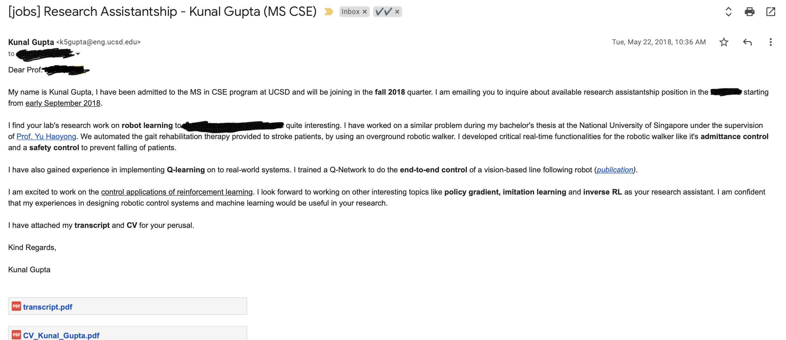

Hi there! My name is Kunal Gupta and I am currently a first year PhD student at UC San Diego CSE where I previously obtained my master's degree as well. I am often contacted by prospective/incoming students with their queries about MS applications in general and about UCSD MS CSE program in particular. While I am happy to help as much as possible, my inbox and linkedin gets flooded with queries at the begining/end of each application cycle which makes it difficult for me to adequately respond to each person. Since a large portion of queries are pretty generic, I thought that I could answer them here. My hope is that folks, who wish to send me an email in this regard, first go over the FAQs and only ask me queries which are not sufficiently addressed in this page. Anyways, I hope that you find this useful and please feel free to drop me an email in case you have more questions!
Note: The following are strictly my personal opinions and I do not vouch for their broader authenticity. It is also slightly biased towards those who wish to do research in computer vision, so please excuse me for that. I strongly recommend the reader to talk to other alumni, MS advisors, faculty and the graduate divion to gather a holistic prespective. Lastly, I advice that the reader use their own sense of judgement while making any decisions related to pursuing higher education.
Q. [M.S. vs Raship dilemma] I am interested in computer vision and I want to pursue a PhD degree in future. Right now, I believe that my profile is insufficient for direct PhD admits at good universities so I am looking for masters program en-route to PhD. Money is a concern for me and I do not want to spend a lot for masters, rather I would prefer to keep doing the RAship and try for direct PhD if I do not get into a good masters program. Hence, I am currently looking for a strong research-based masters program which is also fully funded.
A. I don't think any competitive master's program will give you sufficient funding. However, various schools provide different amount of fee waivers if you are employed as a TA/RA. At UCSD particularly, getting an RA is hard. However, TAships is quite common! Overall I'd say UCSD is a great school if you are looking for a research based Masters at a lower cost. I would not recommend you that you go to private schools because that will cost you a lot of money and they usually do not offer any fee waivers. I encourage you to keep working hard towards your goal for PhD. Make the best use of your thesis period and try to get a publication and a strong letter from your advisor. Definitely apply to UCSD! Also, I have heard that few other schools such as Maryland also provides great financial assistance, you should ask relevant seniors there about it.
Q. [Getting into CS from another UG major] You got into UCSD with CGPA of 8.8/10, you too were not from CS major in undergrad. Can you share what were the factors of your selection in UCSD?
A. I obviously don't know the answer to this question, but I think the reason for my getting accepted at UCSD in CSE (in spite of my UG in EEE) might be that I applied in the robotics sub category while filling out the applications. Generally, each program tries to maintain a diverse set of student interests and UCSD is currently expanding it's robotics program, therefore I think given my profile was purely in robotics, they found me relevant. Moreover, I think LOR's play a huge role in this process. I had a very strong letter from my thesis professor at NUS which I think also made my profile stronger. But this is still a mere guess!
Q. I wish to work as a software developer post MS, how important is the ranking of the program (say QS)?
A. Unless you want to go on to a PhD program (or some other research role), the choice of the program is not so difficult. If you happen to get into any of the top 20 programs, I think you will be good to go as long as you work hard in your courses and job interviews. I really don't think that college reputation matters that much when it comes to software development roles. If you happen to get some industry experience, it is infact better! So, I'd say, don't worry about getting in a top program. Those ranking really do make difference only when it comes to research, courses and job opportunities are pretty much the same in any descent program. Maybe I'd also advice you to apply to more schools on the west coast since most IT companies have their offices here (and maybe Boston, Seattle). I have seen that students studying close to such places (where there are companies basically in the next street) have an advantage compared to those who are studying in remote colleges. So maybe keep that in mind when you are short listing.
Q. Do you think an Ivy school graduate has a leg-up over UCSD folks in any manner? Asking coz I got into Columbia MS CS too and I am genuinely at crossroads at the moment. Just wanted some perspective.
A. Again not the best person to comment on this but l feel that MS CS program at UCSD is very strong and a bit cheaper than Columbia. All these tags matter only to land your first job. Moreover, you are coming to study engineering not business.
Q. I am choosing between CMU and UCSD and both seem to be really good on all aspects, so I am confused which one to pick?
A. Well it depends what you want to do post ms. To be very honest with you, CMU was my dream school. I worked so hard during my undergrad to get into CMU, but then when the time came to apply, I realized that it is going to take a lot of money and I wasn't sure if I it was worth taking such a large financial commitment. So I didn't even apply to CMU. But now when I look back, I think coming to UCSD was the best decision ever. I think my research here is as good as it could have been even if I was at CMU or MIT. Personally, I like to believe that there are no absolutes, these programs are in a band. I don't know what is your financial situation, but for someone from a middle class background in India, MS at CMU comes with a big price tag. And to optimize for high quality research you need much more than good research facilities. At the end of the day it is YOU who will be doing research, not your prof, not your collaborators. They are only as good as you are because it is your project. If half of the time you are worried about going into debt, then you won't be able to focus on your research. You would need everything going good for you, money, time, profs, mentorship, family support. Don't just think of one factor. The extra money that you save can go into better things like eating more healthy food or living in a safer and better community. If I was in your situation, knowing what I know as of now, I would have picked UCSD not questions asked. I mean, I got a first author paper at Neurips 2020 that too as a spotlight (4% acceptance) . How many masters students can get that? I am not bragging but trying to tell you that the whole package matters lot more. My other colleagues here have also gotten papers (including orals) in CVPR/ECCV, etc. Even for a student at CMU, this is going to be a tough feat to achieve. If you choose to go to CMU, it is quite likely that you would end up in industry only because at the end of 2years the loan amount would be a lot. I can't stress this enough, research is VERY HARD, there are so many sacrifices one has to make. In my opinion coming to UCSD would give you a better shot overall. However, if you have the money... as in you can happily pay for 2years of MS at CMU, then just go there. UCSD provides a great balance between high quality research environment and relatively low cost. I hope this helps you in your decisions. And obviously talk to folks at CMU. I am biased towards UCSD. To me ultimately the difference would come w.r.t. to the money you are willing to pay. The available funding opportunities at UCSD tilts the balance in its favour.
Q. Do you feel that employment opportunities will be better at Columbia? (UCSD is quite far from the tech hub in California and I couldn't find any data/stats regarding graduate (master's) program outcomes (such as the companies that students have joined, no. of students who got full time roles etc) at UCSD, to compare against Columbia)
A. I don't think one can definitely say which of the two have better job prospects. It is true that San Diego is far from the bay area but there are still plenty of companies here like Qualcomm, Apple, Tu Simple, Lytx, Intel, Grey Orange, and many more! Moreover, San Jose isn't that far. I think because of all this, UCSD has several employment opportunities in its neighbourhood. But like I said, if you are simply looking for an SWE role, then it doesn't matter which one of the two you pick. Except that Columbia is going to be more expensive.
Q. The cost of attendance at Columbia is quite expensive, and personally I feel I would be less anxious with a smaller student loan. Do you think Columbia would offer any benefits that would justify the expensive cost of attendance ?
A. Of course, you should be asking this question to alumni of Columbia graduate program but my short answer would be a big NO! Don't waste money.
Q. How is the summer internship / final placement situation like for the program? Would you say it is fairly easy to get a decent job by the time you graduate?
A. I think job opportunities are pretty good not only at UCSD but in general at any top 20 school. CS is a hot field. Just don't try to do anything stupid and you should be fine.
Q. How is the startup culture in and around UCSD?
A. I am not the right person to comment about startup culture, I am more into research but San Diego is surely a place where lots of tech companies are located so I guess the avenues are a lot! Also, there are tons of networking events here so I think you should be able to get several opportunities to network with Alumni and other folks. Generally, all colleges in US have the concept of career fairs, where you get to network with folks from companies who are currently hiring.
Q. Do professors (thesis advisors) allow you to go for internships or do they have industry connections where they can recommend?
A. You are free to do whatever you want, profs generally do not interfere in this process, however if you ask them, they may tell you to ping some of their former students/contacts in industry which can greatly increase your chances of getting an interview!
Most master's students at UCSD CSE support themselves via TAships. Typically if you get a 50% (20hrs per week) then as an international student, your parital tuition waiver and stipend evens out your living and non-resident fee. So you get by earning/paying nothing. It is rare to get a funded RAship position as a master's student as Profs prefer to spend that kind of money on a PhD student.
Q. How likely is it to get a TAship at UCSD if you are a MS student in the CS department? Does applying early (like the first quarter) help a lot if any?
A. I'd say TAships are quite common, on an average you can expect to get it 3/6 quarters. And yes, it is better to apply before the deadline and also contact the respective instructor who you feel would be a good fit.
Q. Can we TA during the very first quarter?
A. I think yes, but generally it is a bit difficult as you will be competing with second year MS students who are still around. In later quarters 2nd year MS students graduate so you have more chance
Q. How to look for RAship and how to approach professors about it? Can we do RAships with multiple professors?
A. As an MS student, you can definitely do RAships in different labs and profs. Ideally, you should send profs emails introducing yourself and telling them why you are excited about their research. They will usually schedule a time to chat with you and depending upon how things go you might end up working with them. Usually, you should spend the first 1-2 quarters focussing on courses taking more research level courses early on (291 series) that should help you (1) finish up your course requirements and (2) put you in direct touch with profs which can lead to long term collaborations. If you plan to do a thesis you can take 298 research credits (upto 12 units).
Q. A professor accepted me into his group and gave me a project to work on, does that count as RAship?
A. Usually, RAships are not paid positions at UCSD CSE. TAships are going to be the major source of financial assistance. I did my first TAship in Spring of first year. I feel that when people say 'RAship', they often mean work for free in exchange of research experience with a professor. It is not as bad as it sounds, especially for someone who is just starting out in research or in a new field.
Q. How to know about what sort of work is being done in Prof. X's group?
A. Check their personal/lab webpage as well as google scholar page for the latest record of publication. You can also send their PhD students an email to chat --they are usually more accessible.
Q. I will be starting in Fall and don't have any idea about what research topic to pick and work with which advisor? Do you know about any current research openings at UCSD related to computer vision (or some other area)?
A. Unfortunately, the only way to know about research opportunities is by contacting profs, they will tell you when and if they have openings for you. My advice would be to first spend 1-2 quarters taking courses (preferably 291s). Don't worry about not having a topic right now, there is lot to explore. Take courses and then talk to prof, there are always active areas of research.
Q. Anyother tips for applying for TAships?
A. I am not an expert in TAing because I also struggled with it, however you will still get them somehow or the other so don't worry too much about it not being able to get one initially. It is a random process but everyone gets to TA for a significant amount of time. I think the course load would be pretty much the same, just get a TA assignment (remember it is a great financial support!). And definitely reach out to professors with your CV and introduce yourself. And add that video in your application. It definitely helps! Take any topic, they only want to see you speak in english clearly.
Q. What courses do you suggest to an incoming student interested in computer vision or machine learning?
A. I suggest taking 250A, 252A. No matter what, take these two courses at least. You will thank me later.
Q. Can you suggest some courses for NLP and datascience? I want to get a good job based on those in industry.
A. I don’t have much experience with NLP and data science but I know people do take some courses and consequently get well paying jobs. So you should be fine. UCSD has invested heavily in their data science institute and expanding their NLP group.
Q. Which courses did you take to complete your breadth requirements?
A. For breadth requirements I took 250A, 224 (networking) and 203B (convex optimization).
Q. Do you suggest taking 202 for breadth requirement?
A. I haven't taken the course myself but from what I have heard, the course is quite heavy in terms of number of assignments, etc and didn't help much in job interviews. For people who want to do ML/CV/AI, I recommend taking Convex optimization 203B which I personally found quite helpful.
Q. What other courses do you recommend taking in Fall?
A. I would suggest that you take 252, 250 and deep reinforcement learning by Prof. Yu (if you are interested), I think Prof. Henrick also teaches a great intro to robotics course. So you can take that. Also there's a graphics course by Prof. Ravi.
Q. Should I focus on finishing my breadth requirements first?
A. I strongly advice against doing breadth courses early! You should do a course not for the sake of completing it but to build some momentum (say to dig deeper in a direction) or add a couple of course projects to your resume which can help you while interviewing for summer positions. You can always wrap up your breadth courses later in your second year. Of course, if there are courses that you think will help you build momentum while also satisfying your breadth requirement then go for it!
Q. What is the exact process for course registration? Is there any communication made by the department when the process officially starts. Also, will the registration for courses be on a first come first serve basis? How do we find the course catalog for the current quarter?
A. You will be receiving a long email from Tierra containing all the information. So don't worry about it. In short, usually almost everyone gets to enroll in courses they want.
Q. How do you usually get feedback for past offerings of courses, what is the general process for selecting a course?
A. I don't think there is a formal way to get past feedback, you take courses based on interest. You can always talk to me or other seniors in the department to make up your mind about which courses to take.
Q. Would it be a good idea to apply for and register for >3 courses initially, in case the approval does not come through for some course, or there is a clash in timings, or just because I am interested in more courses and would like to check the classes out?
A. Absolutely, register in as many as you want and then drop them later.
Q. Should I attend seminar courses?
A. Absolutely! They are light weight and fun.
Q. Should I email prospective advisors during the application process or before joining UCSD?
A. I don't think you will get much response before you are admitted to UCSD. Things are so uncertain and profs have limited time, so only when you are currently a MS student at UCSD, will they entertain any application from you.
Q. How should I email a professor to join their group or do some research with them?
A. Following is a sample of an email I sent to a professor seeking a research assistant position.

Q. Do thesis advisors generally expect the student to continue work during summer?
A. Profs don't expect anything but generally if you are serious about research then it makes sense to work in the summer. During quarters the courses take a lot of time, leaving little time to do research.
Q. I am interested in pursuing research but have very little experience in it at the moment, hence I wanted to get started with some project work as soon as possible. But I am confused how should I go about it?
A. I started doing research from first quarter itself, but in retrospect, my advice would be to take research lightly for the first 1-2 quarters and focus on doing good coursework. Generally 291s are quite heavy and don't leave much time for research. Moreover, you will have some course project elements, that will set you up for your thesis project if you choose to. That's how my research developed. I took 291s from Prof. Manmohan and Prof. Hao in Winter and that laid the foundation of my work in 3D CV. So please don't underestimate the utility of 291s, you can finish off your breath courses in 2nd year when you are well into your research. If you leave good courses for 2nd year, you will never have enough time to actually make use of them since you will be about to graduate already.
Q. (Changing research area) I have a background that is primarily in NLP and Data Mining. However, in my senior year, I picked up an interest in Geometry Processing, and through it Geometry-based Vision and 3D ML. However, I have comparatively lesser research experience in this area. Could you please guide me if it is indeed possible to make a switch, how to overcome the lack of research experience in 3D/geometry-based Vision, and how to approach Prof. X for a project in these areas?
A. . Of course it is possible to make a switch! When I started my masters, I had little to no experience training deep learning models. My undergrad experience was in control systems design. It took a bit of effort, but in 2-3 quarters you would be up to speed. Make sure that you take the research intensive courses in your early quarters. Like the 291 series. Once you have done 1-2 courses on vision, you can start working with Prof. X.
Q. What are the pre-requisites that Prof. X looks for in incoming MS students? What are some ways in which one can get involved with projects in his/her group? Any courses I could take at UCSD or prepare beforehand?
A. Most Professors usually accepts students who have at least taken their course or have a solid research experience to begin with. It is honestly not too hard to start working with them.
Q. I noticed that very few students do a thesis. Could you please guide me about the pros and cons of the thesis route, and why did you choose it? Is there a lot of bureaucratic processes involved?
A. There is no bureaucratic process with either thesis or non-thesis. You are completely free to do whatever you want. Just keep in mind that thesis route generally takes longer and requires lot more effort due to the difficulties associated with research. Most MS students simply want to go to industry so they don't find enough motivation to do thesis. I did the thesis because I wanted to build a good research profile to apply for a PhD.
Q. How was the combined pressure of courses, TAship and Research in one quarter?
A. Generally the pressure is a lot, TA+RA+courses+research takes a huge toll on you. UCSD MS CSE program is very rigorous. I would not sugar coat this. You will be struggling to find time (if everything is going well). And you won't even realize when the 2 years are over. But it is nothing which cannot be done. Many people do it. I think if you are motivated and willing to excel no matter what then you should be fine. At the same time, I would caution you not to burn out. Everybody is different and has different capabilities and capacities, so if you find yourself struggling to manage all this, there is no shame in going a bit slow. Mental health comes first!
Q. How did you manage to get into the PhD program from the MS program?
A. The most important part to getting into any PhD program is to show solid apptitude for research which comes primarily in terms of papers and letter of recommendations. Even when you are applying internally, i.e. pestering your MS advisor to take you in as a PhD student, in most cases (especially in more competitive labs in CV/ML) you will still be required to publish 1-2 FIRST author papers in top tier venues like NeurIPS,CVPR,ICCV,ECCV,ICML,ICLR,SIGGRAPH,SIGGRAPH Asia. Unless you already have a FIRST author paper in any of these venues, no matter your motivation for research or your aptitude, unfortunately, no one is going to take you in including your own MS advisor. In my case, that meant working super hard on my thesis project Neural Mesh Flow to get it into NeurIPS (that too as a spotlight!). Once that happened, my advisor offered to join his lab as a PhD student and I accepted the offer! I can understand that all this sounds a bit harsh for someone who is just getting into research but unfortunately, this is the state of the filed right now. I believe this is primarily because it is much easy to publish papers in CV/ML (which btw does not necessarily mean quality). So it is really upto oneself to decide if he/she wants a PhD so bad. I remember when I was contemplating whether I should do a PhD or not, my college senior and a close friend Krishna Murthy grilled me a lot almost to the point of discouraging me from doing a PhD. I am very grateful that he did that because PhD in this area is not a piece of cake and there are not many incentives to do a PhD other than a strong desire to do research or join academia. My only advice to anyone planning to do a PhD especially after an MS is to think twice! Also, in case you think I am overblowing the reality, you can check this out.
Q. Did you apply the formal way for your PhD (as one does during app season)? Or was it an internal thing where the prof agreed to take you as their student seeing the performance in MS?
A. Once you are into the MS program, you cannot apply the formal way as an outsider. However, everything else remains pretty much the same. You need to submit a SOP, letters, etc by the departmental deadline (usually 15th Dec). The most important thing here is for your advisor to be able to give a letter of recommendation to support your case which basically means that they are ready to fund you for the duration of your PhD.
Q. Should I go for an industrial internship or stay back on campus and do research with a professor.
A. If you are really serious about doing a PhD then you need to use your summer that best allows you to write a FIRST author paper in any of the above mentioned top tier papers. Usually, it is hard to find such opportunities in industry as you won't be able to work on your project in similar capacity beyond the duration of your internship compared to the universty's lab. It typically taks around 6-9 months of focussed effort to get such a paper which is rarely possible in an industrial internship.
Q. How to get a research industry internship?
A. There are several companies where you can get to do research an in intern and publish papers -- Adobe, NVIDIA, Google, Facebook, Microsoft, etc. There are mainly two things to keep in mind when trying to get an internship offer. (1) You should have some previous research experience (not necessarily a paper) this can be your course projects or some experience from your prior employment. (2) Simply applying on linkedin rarely works, in my experience, sending customized emails to different research scientists at these labs is perhaps the best way to get an interview call.
Q. The class size at UCSD seems to be quite large, does this make it difficult to work with a professor in an area of my choice?
A. While it is true that UCSD MS CSE program intake is huge, but remember that only a tiny fraction of students end up doing any kind of serious research (maybe like 1%) so I think it is fairly easy to join a lab and work with a professor if you happen to have some prior experience in their research area. This can come from either attending their course (and doing well on their research project) or having some experience with your prior employment.
Q. Do you get funding as an RA when you work with a professor either during the quarter or during summer?
A. No. You are most likely not to get funding as an RA in anycase. If you choose to stay back on campus during the summer, you would need to arrange funding for yourself. This can be done by either TAing during the summer or joining some other labs part-time in UCSD that can pay you.
Q. How did you get started in research?
A. Well, I am still in the early stages of my PhD so I can't really comment much. But in my limited experience the most helpful thing that I found was reading papers. Like a ton of papers. I probably read (with full on highlighing and annotating) around 100-150 papers in my narrow area almost to the point where I knew all the papers that any new paper being posted on Arxiv is citing (again in my research area of 3D reconstruction). This significantly bridges the gap between your knowledge and those who are actively doing research. Even today, I continue to read a lot of papers to keep myself up to date with the latest trends in my area and other relevant areas of CV/Graphics and ML. On top of that, I highly recommend seeking out some form of mentorship (other than your own advisor) who can help you navigate the difficulties of research. In my own case, I was helped by my undergrad senior and a close friend Krishna Murthy who tirelessly listend to me whinning about how research is so difficult and help me in brain storming, pointing me to relevant papers and software packages. Without his support, I won't be where I am today.
Q. Where can I learn more about a prof's reseach?
A. Check their Google scholar for the most upto date research activity. Additionally, you should also check the Google scholar page og the PhD students to learn about the specific line of research that different member so the lab are working on.
Q. Can you answer some questions about on-campus housing?
A. I never stayed on campus so can't really help much. You are better off talking to seniors who have stayed in there. I stayed in Costa Verde Village which I think is best place to be depending upon rent, proximity to campus and bus service.
Q. Post COVID, what are your current opinions on on-campus vs off-campus housing considering the recent increase in rents? You also mention Costa Verde Village which seems to cost about 1.5K per bedroom (best case) when I searched online. Is this still the best option or have things changed considerably? Any advice on how best to figure this out?
A. Unfortunately things have changed since the covid times and I am also not well aware of the situation in other places either in on campus or off campus. That being said, I have heard that some students have preferred to stay on campus now as it is cheaper (only slightly) if you want an individual room however, staying off campus is better if you are okay to share your room and want to pay a bit less. Other than that, I don’t think I can say much about the situation except that you should call the leasing offices to know the availability. Also, one issue with on campus is that it is ridiculously hard to get one thanks to the long waiting list.
Q. Which specialization were you a part of? Also, what is the approx class size?
A. My specialization was in Computer Vision and AI. Generally, the class strength is ~250.
Q. Is there possibilities for CS grad students to do projects with Management grads? Are there any project-based courses that we have? Or can we do side projects across departments?
A. I cannot comment particularly about management school, but generally, a lot of students take courses there for credit. But I don't think I can give you much information in this regard. Most courses have project work which are really good and helps you build a strong CV. Also you can work with professors on longer projects.
Q. Overall how was the quality of courses especially related to vision/ML/graphics?
A. One of the best in the world. Especially in 3D Vision and graphics UCSD is amongst the world's top programs. I guess maybe it is second to only CMU.
Q. How does the MS CSE program differ from similar programs offered by ECE and HDSI departments?
A. Overall, I think there is a lot of free movement between the departments, so hopefully you will be able to take courses from whatever department you choose to. Moreover, your home department doesn't really matter much when working with a professor. However, I still highly recommend that you look at the specific curriculum of each program to figure out what suits you best.
Alright, there are some questions that I feel people should really be asking but they don't so even though these don't qualify to be FAQs, I thought I would still go ahead and include it so that those who come across this page may read it and benefit. Again, these are just my own opinions on the subject and you are free to do whatever you want to do, all I want is for people to know the complete story of pursuing a master's degree here in US and often times via popular media, we only get to see one side of the whole experience and often the uglier aspecs get brushed under the rug. So please read the following and make up your own mind!.
Q. Can you throw some light on some of the less known apects of MS experience?
A. Personally, my experience was okaish. In fact, I like to think that I did quite well actually. But I completely understand the reality of things getting messed up and taking a turn for the worse. The thing is that coming here across half the world is not a small thing. In spite of all the photoes that you may see people posting on Instagram, chilling on California beaches, attending fun events on campus, and dining out at fine resturants, the STRUGGLE IS REAL. I have seen by my own eyes how people break down under immense stress of coursework, research, home sickness, financial stress due to loan amount, or emotional distress arising from the passing away of a loved one. Life is real, things happen. Just because you chose to do your MS in a fancy US university doesn't exempt you from all that happens in the world on a daily basis. Perhaps I only knew the word 'mental health' but never truly grasped its true meaning and that how big of a deal it is in lives of people around me. I have friends who were struggling with depression and severe anxiety issues, those whose parent's health deteriorated immensely so much so that they had to leave the program after the first year to take of their loved ones. Other than that, not all those who come here end up doing so well academically also! I know you are going to say 'Hey! I did my undergrad from IIT XYZ, I got this!' but NO!... NO NO NO!. This is not how things work, I myself was surprised when I first experienced this first hand but things make sense in retrospect. The academic success of an individual cannot be extrapolated from what they were like in their undergraduate days. It depends a lot on the emotional and psychological state a person is currently in, especially when they are undergoing a huge cultural, emotional and financial shock of coming here for their grad education. People often times also make wrong choices in life and in coursework perhaps in particular. It is not unsurprising at all for people (even those at UCSD, who did their B.Scs from IIT B, Tsinghua, etc) to realize that they are almost done finishing their MS degree and are not very equipped with getting a real job in industry. Some people have difficulty navigating the job market owing to cultural differences. Some loose confidence in an interview even though they are really good otherwise in their stuff. There are thousands of factors. I consider myself to be more of an outlier, I had my own fair share of troubled experiences but by the grace of God and support of my friends, family and teachers, I ended up just fine. But don't think this happens to everyone. Due to several reasons beyond your control it is possible that you may not have the best time of your life. So therefore, I always advice prospective students to consider the whole picture when deciding whether to come here or not.
Q. Do you recommend taking an education loan to fund master's education in US?
A. The thing is that I myself took an education loan from an Indian bank and used part of it to fund my master's education. However, my personal advice would be not to do it. I know this may seem as a surprise to so many of you, but I don't think taking a huge education loan to pursue a masters here is a good idea. The reason is that the loan amount can become a huge liability of things go wrong. (Read my answer on not so good aspects of MS experience!). And if God forbid, something bad happens such as your health deteriorates, you suffer from mental health issues or you have to leave the program mid way to take care of a loved one. The reasons can be plenty. I therefore think it isn't worth the risk. Heck, some students from turkey had a hard time because the value of Lira almost became half in a matter of months leaving them with a twice the debt, surely no plan can sustain this much extra expenditure! You may think that 'I will repay all that once I get a job!'. While most of the students do repay their loan once they get a full time job, it is no piece of cake. Remember that once you are done with your degree, you only have like 90 days to either start your job or leave the country. If you happen to be not ready for job interviews/applications then you are in for some trouble. Because of this, some people do end up forced to go back to their home countries and try to pay back the loan amount from there. Therefore, come here only if you or your family have adequate funds currently present in your bank account. Do not rely on your education loan, it is very risky and can become the worst nightmare you can imagine.
Q. As someone coming from a middle class family in India, I have big dreams of doing a PhD from a top program in the US. Should I come to US to do my MS as it would better prepare me for a PhD.
A. I can understand from where you are coming from. It really is a sad state of affairs that the research climate in India isn't so strong and consequently, so many students are forced to leave home to pursue their dreams of doing high quality research. While it is true that during the MS at a US university you will get a chance to do cutting edge research, I won't recommend taking this path especially if you will be relying on a student loan to make this happen. In earlier questions I have described how the process of converting from a masters to a PhD especially in hot areas such as CV/ML/AI is so cut throat and not to mention several things do go wrong (again, you cannot control everything) which ends up making this path quite stressful. My advice would be to instead do an RA or a Masters in a good lab in India (IISC, IITB, IIITH, IITH, among others) and get a few papers in. This is going to cost you some extra time, I agree, but would save you from the many troubles that lie on a US MS -> PhD. At the same time, I believe if you have deep pockets, you are free to do almost anything, in which case you can use your MS in US to target some of the prestigious PhD positions. You can also think of doing your MS from a place which gives some financial asssistance such as those in EU. Also, remember that often times it is hard to payback your MS student loan from the stipen you get in your PhD. So even if you do get into a good PhD program right after your MS, things again will be tight during your PhD due to strained out finances. You best bet in that case would be to take a gap year between your MS and PhD and do some industry job to pay back the loan amount.
I hope to continue to add more FAQs here. If you have any questions, comments, suggestions or wish to say hi, send me an email.